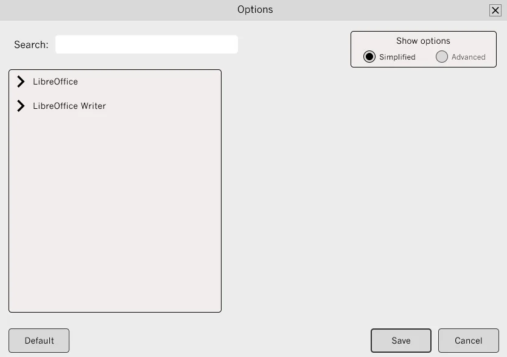

SELECTED WORK / 2022–2026
Projects
Different challenges, one approach: understand the context, evaluate the experience and turn findings into meaningful improvements.
Research & client collaborations

Product design · 2023
Polar Electro
Making AI-powered wellbeing approachable
From four interviews to a validated wearable and AR concept for people who want to build healthier habits.
Read case study
UX research & redesign · 2023
LibreOffice
Making complex settings easier to navigate
A research-driven redesign that balances novice users’ needs with the flexibility of an advanced settings interface.
Read case studyUsability research · 2022
TOAS
Reducing friction in student housing applications
Heuristic evaluation and think-aloud testing revealed 30 usability issues and informed actionable recommendations.
Read case studyResearch experience · 2025–2026
GameIN
Exploring playful ways to participate
Research, data analysis and field activities in a multinational collaboration at Tampere University.
Read case study
Accessibility & usability · 2024
Trendy-kirppis
Making a local business website easier to use
Expert evaluation and hands-on collaboration with a developer to improve navigation and accessibility.
Read case studySoftware development · 2023
Solita
Exploring a privacy-conscious Finnish AI assistant
A multidisciplinary team built an on-site assistant for student-benefit questions, with spoken and written Finnish.
Read case studyPersonal explorations

Personal project · 2025
F1 Predictions
Turning a family tradition into a digital experience
A seasonal prediction game brought to the web, combining interactive forms and historical statistics.
Read case studyPersonal project · 2026
Portfolio Website
Designing a better way to share my work
An experiment in directing AI-assisted development while retaining ownership of design, content and quality.
Read case study